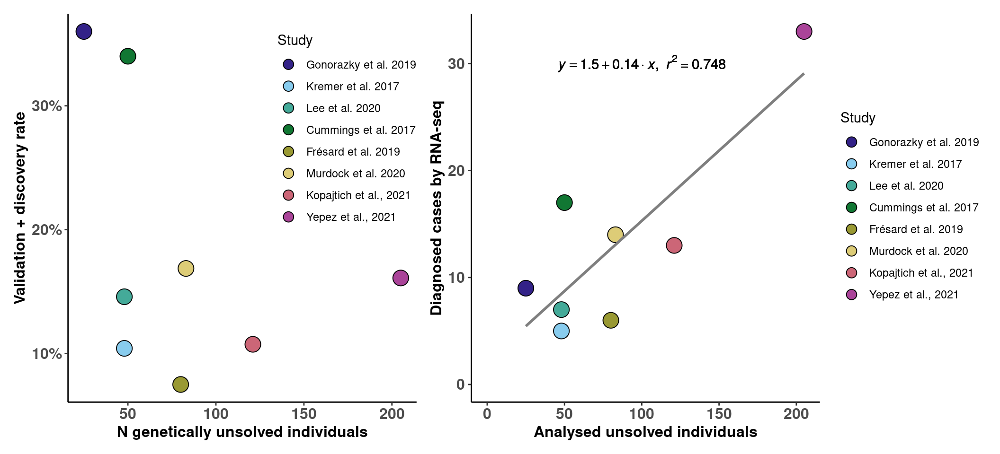
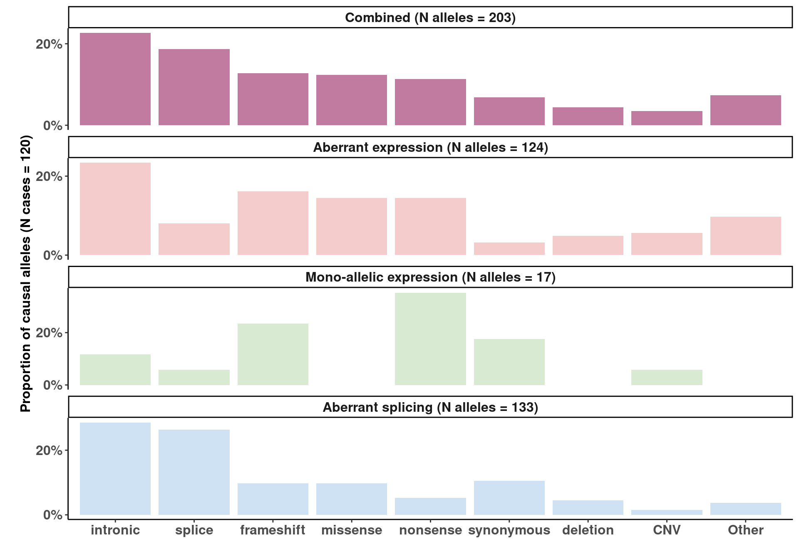

Diagnostic rates in the RNA-seq studies
studies_df = data.table(
ID = c("Kremer et al. 2017","Cummings et al. 2017","Gonorazky et al. 2019",
"Frésard et al. 2019","Lee et al. 2020","Rentas et al. 2020",
"Murdock et al. 2020", "Maddirevula et al. 2020", "Kopajtich et al., 2021", "Yepez et al., 2021", ""),
Affected_individuals = c(105, 63, 29, 94, 48, 15, 115, 11, 145, 303, 0),
Undiagnosed_individuals = c(48, 50, 25, 80, 48, 5, 83, 11, 121, 205, 0 ),
Diagnosed_individuals = c(5, 17, 9, 6, 7, 2, 14, 6, 13, 33, 0) )
studies_df[ , Diagnostic_rate := Diagnosed_individuals / Undiagnosed_individuals]
studies_df[Undiagnosed_individuals == 0 , Diagnostic_rate := 0]
studies_df <- studies_df[ !(ID %in% c("Rentas et al. 2020", "Maddirevula et al. 2020"))]
studies_df <- studies_df[order(Undiagnosed_individuals)]
studies_df$ID <- factor(studies_df$ID, levels = studies_df$ID )
p1 <- ggplot(studies_df[ID != ""], aes(Undiagnosed_individuals, Diagnostic_rate) )+ # , size = Diagnosed_individuals
geom_point(aes(fill = ID), shape = 21, size = 5.5) +
scale_fill_ptol(guide = guide_legend(override.aes = list(shape = 21, size = 3.5)))+
scale_y_continuous(labels = scales::percent_format(accuracy = 1)) +
ylab("Validation + discovery rate") +
xlab("N genetically unsolved individuals") +
labs(fill = "Study")+ #, size = "N diagnosed individuals"
theme_classic()+
#scale_size(range = c(3,8))+
theme(axis.title.y= element_text( size=12, face="bold"),
axis.title.x= element_text( size=12, face="bold"),
axis.text.x = element_text(face="bold", size=12),
axis.text.y= element_text(face="bold", size=12),
legend.position = c(0.8, 0.7))
m <- lm(Diagnosed_individuals ~ Undiagnosed_individuals, studies_df )
eq <- substitute(italic(y) == a + b %.% italic(x)*","~~italic(r)^2~"="~r2,
list(a = format(unname(coef(m)[1]), digits = 2),
b = format(unname(coef(m)[2]), digits = 2),
r2 = format(summary(m)$r.squared, digits = 3)))
p1_2 <- ggplot(studies_df[ID != ""], aes(Undiagnosed_individuals, Diagnosed_individuals) )+ # , size = Diagnosed_individuals
geom_point(aes(fill = ID), shape = 21, size = 5.5) +
scale_fill_ptol(guide = guide_legend(override.aes = list(shape = 21, size = 3.5)))+
geom_smooth(method='lm', colour="grey50", se = FALSE)+
ylab("Diagnosed cases by RNA-seq") +
xlab("Analysed unsolved individuals") +
labs(fill = "Study")+ #, size = "N diagnosed individuals"
theme_classic()+
#scale_size(range = c(3,8))+
expand_limits(x = 0, y = 0) +
theme(axis.title.y= element_text( size=12, face="bold"),
axis.title.x= element_text( size=12, face="bold"),
axis.text.x = element_text(face="bold", size=12),
axis.text.y= element_text(face="bold", size=12))
p1_2 <- p1_2 + geom_text(x =100, y = 30, label = as.character(as.expression(eq)), parse = TRUE)
p1 | p1_2

######################################################################
################ Genetic diagnosis in the RNA-seq studies ############
######################################################################
Genetic diagnosis in the RNA-seq studies
cases_df = fread("../Variant_interpretation_RNA/RNA_studies_variant_interpretation.csv")
cases_df <- cases_df[ !(Study %in% c("Rentas et al. 2020", "Maddirevula et al. 2020"))]
cases_df[Study == "Cummings et al. 2017" & CaseID == "E2", Variant_effect := "splice; splice"]
cases_df[Study == "Cummings et al. 2017" & CaseID == "E2", MAE := 1]
cases_df[Study == "Cummings et al. 2017" & CaseID == "C9", MAE := 1]
cases_df[Study == "Cummings et al. 2017" & CaseID == "N25", MAE := 1]
cases_df[Study == "Cummings et al. 2017" & CaseID == "N22", MAE := 1]
cases_df_s <- cases_df[Splicing_only == "No"]
cases_df_s[ , outlier := "No"]
cases_df_s[ AE == 1, outlier := "AE"]
cases_df_s[ AS == 1, outlier := "AS"]
cases_df_s[ MAE == 1, outlier := "MAE"]
cases_df_s[ AE == 1 & AS == 1, outlier := "AE + AS"]
cases_df_s[ AE == 1 & MAE == 1, outlier := "AE + MAE"]
cases_df_s[ AE == 1 & AS == 1 & MAE == 1, outlier := "AE + AS + MAE"]
cases_df[, c("Variant1", "Variant2") := tstrsplit(Variant_effect, "; ", fixed=TRUE)]
cases_df[ is.na(Variant2) & Alleles == 2, Variant2 := Variant1]
cases_df[, comp_het := Variant_effect %like% ";"]
df <- cases_df[comp_het == T | Alleles == 1 ]
df <- cases_df[comp_het == F]
df <- df[, .N, by = Variant_effect]
df[ , Total := sum(N)]
df[ , perc := N/Total]
df <- df[order(N, decreasing = T)]
cases_df[, st_case := paste0(Study, "_", CaseID )]
cases_var1 <- cases_df[ , c("st_case", "Variant1", "AE", "AS", "MAE" )]
setnames(cases_var1, c("Variant1"), c("Variant"))
cases_var2 <- cases_df[ , c("st_case", "Variant2", "AE", "AS", "MAE" )]
cases_var2 <- cases_var2[!is.na(Variant2)]
cases_var2[st_case == "Cummings et al. 2017_E2" & Variant2 == "splice", MAE := 0]
setnames(cases_var2, c("Variant2"), c("Variant"))
cases_var <- rbind(cases_var1, cases_var2)
rm(cases_var1, cases_var2)
cases_var[Variant == "inonsense", Variant := "nonsense"]
cases_var <- cases_var[st_case != "Gonorazky et al. 2019_Case6"]
cases_var <- cases_var[st_case != "Yepez et al., 2021_R77611"]
cases_var[st_case == "Cummings et al. 2017_C9" & Variant == "splice", MAE := 0]
cases_var[st_case == "Cummings et al. 2017_N25" & Variant == "intronic", MAE := 0]
cases_var[st_case == "Cummings et al. 2017_N22" & Variant == "missense", MAE := 0]
cases_var[st_case == "Gonorazky et al. 2019_Case15" & Variant == "missense", MAE := 0]
cases_var[st_case == "Gonorazky et al. 2019_Case17" & Variant == "missense", MAE := 0]
cases_var[st_case == "Yepez et al., 2021_R74065" & Variant == "synonymous", MAE := 0]
cases_var[st_case == "Yepez et al., 2021_R77365" & Variant == "missense", MAE := 0]
cases_var[st_case == "Yepez et al., 2021_R21470" & Variant == "splice", MAE := 0]
#cases_var[st_case == "Yepez et al., 2021_R11285" & Variant == "missense", MAE := 0]
cases_var[st_case == "Yepez et al., 2021_R11258" & Variant == "missense", MAE := 0]
cases_var[st_case == "Yepez et al., 2021_R26710" & Variant == "missense", MAE := 0]
cases_var[st_case == "Yepez et al., 2021_R29620" & Variant == "missense", MAE := 0]
cases_var[st_case == "Yepez et al., 2021_R80184" & Variant == "missense", MAE := 0]
cases_var[st_case == "Yepez et al., 2021_R89912" & Variant == "missense", MAE := 0]
#cases_var[st_case == "Yepez et al., 2021_R77611" & Variant == "missense", MAE := 0]
cases_var[st_case == "Yepez et al., 2021_R24289" & Variant == "missense", MAE := 0]
# Group variants
cases_var[Variant == "intergenic", Variant := "intronic" ]
cases_var[Variant == "5UTR", Variant := "UTR" ]
cases_var[Variant %in% c("UTR", "promoter", "indel", "start-loss"), Variant := "Other" ]
Nalleles <- nrow(cases_var)
Nalleles_per_vt <- cases_var[ , .N, by = Variant]
setnames(Nalleles_per_vt, "N", "Total_a_vt")
cases_var_AE <- cases_var[, sum(AE, na.rm = T), by = "Variant"]
cases_var_AE[, phenotype := "Aberrant expression"]
cases_var_AS <- cases_var[, sum(AS, na.rm = T), by = "Variant"]
cases_var_AS[, phenotype := "Aberrant splicing"]
cases_var_MAE <- cases_var[, sum(MAE, na.rm = T), by = "Variant"]
cases_var_MAE[, phenotype := "Mono-allelic expression"]
cases_var[ , Combined := 0]
cases_var[ AE == 1, Combined := 1]
cases_var[ AS == 1, Combined := 1]
cases_var[ MAE == 1, Combined := 1]
cases_var_Combined <- cases_var[, sum(Combined, na.rm = T), by = "Variant"]
cases_var_Combined[, phenotype := "Combined"]
cases_var <- rbind(cases_var_Combined, cases_var_AE, cases_var_AS, cases_var_MAE)
cases_var[ , perc := V1 / Nalleles] #!!!!!!!
cases_var <- merge(cases_var, Nalleles_per_vt, by = "Variant")
cases_var[, perc_vt:= V1 / Total_a_vt]
cases_var[ , VariantX := Variant]
cases_var[VariantX == "promoter", VariantX := "non-coding"]
cases_var[VariantX == "intergenic", VariantX := "non-coding"]
cases_var[VariantX == "start-loss", VariantX := "non-coding"]
cases_var[VariantX == "deletion", VariantX := "indel"]
cases_var$VariantX <- factor(cases_var$VariantX, levels = c("intronic","non-coding", "5UTR", "CNV", "indel", "missense", "synonymous", "splice", "frameshift", "nonsense" ))
cases_var[ , Total_a_vtX := sum(Total_a_vt), by = .(phenotype, VariantX)]
cases_var[ , V1X := sum(V1), by = .(phenotype, VariantX)]
cases_var[, perc_vtX:= V1X / Total_a_vtX]
cases_var[, Variant2 := paste0(VariantX, "\n(N = ", Total_a_vtX, ")")]
cases_var <- cases_var[ order( VariantX)]
cases_var$Variant2 <- factor(cases_var$Variant2, levels = unique(cases_var$Variant2))
cases_var[, prioratised_alleles := sum(V1), by = phenotype]
cases_var[ , proportion_causal_alleles := V1 / prioratised_alleles] #!!!!!!!
cases_var[, phenotype2 := paste0(phenotype, " (N alleles = ", prioratised_alleles, ")")]
rm(cases_var_AE, cases_var_AS, cases_var_MAE)
outlier_colors <- c( "Combined" = "#C27BA0",
"Aberrant expression" = "#F4CCCC",
"Aberrant splicing" = "#CFE2F3",
"Mono-allelic expression" = "#D9EAD3")
cases_var$phenotype <- factor(cases_var$phenotype, levels = c("Combined","Aberrant expression","Mono-allelic expression", "Aberrant splicing" ))
cases_var <- cases_var[order(phenotype)]
cases_var$phenotype2 <- factor(cases_var$phenotype2, levels = unique(cases_var$phenotype2))
cases_var <- cases_var[order(V1, decreasing = T)]
cases_var$Variant <- factor(cases_var$Variant, levels = cases_var[phenotype == "Combined" ]$Variant )
Main version
cases_var$Variant <- factor(cases_var$Variant, levels = c("intronic","splice", "frameshift", "missense", "nonsense", "synonymous", "deletion", "CNV", "Other" ))
p3c <- ggplot(cases_var, aes(Variant, proportion_causal_alleles) )+
geom_col(aes(fill = phenotype)) +
scale_fill_manual( values = outlier_colors) +
scale_y_continuous(breaks= c( 0, 0.2, 0.4), labels = scales::percent_format(accuracy = 1)) +
xlab("") +
ylab(paste0("\nProportion of causal alleles (N cases = 120)" )) +
labs(fill = "Study",
size = "N diagnosed individuals")+
theme_classic()+
theme(axis.title.y= element_text( size=12, face="bold"),
axis.title.x= element_text( size=12, face="bold"),
axis.text.x = element_text(face="bold", size=12),
axis.text.y= element_text(face="bold", size=12),
strip.text.x = element_text(size = 12, face = "bold"),
legend.position = "none")+
facet_wrap(~phenotype2, nrow = 4, scales = "free_y")
p3c

IyctLS0KIycgdGl0bGU6IE92ZXJ2aWV3IG9mIHB1Ymxpc2hlZCBkYXRhc2V0cwojJyBhdXRob3I6IERtaXRyaWkgU21pcm5vdgojJyB3YjoKIycgIGlucHV0OgojJyAgLSBjb25maWc6ICdzcmMvY29uZmlnLlInCiMnICAtIHNhOiAnYHNtIGNvbmZpZ1siUk5BX0FOTk9UQVRJT04iXWAnCiMnICBvdXRwdXQ6CiMnIG91dHB1dDogCiMnICAgaHRtbF9kb2N1bWVudDoKIycgICAgY29kZV9mb2xkaW5nOiBoaWRlCiMnICAgIGNvZGVfZG93bmxvYWQ6IFRSVUUKIyctLS0KCgpzb3VyY2Uoc25ha2VtYWtlQGlucHV0JGNvbmZpZykKIyBzb3VyY2UoJ3NyYy9jb25maWcuUicpCgoKIyMjIyMjIyMjIyMjIyMjIyMjIyMjIyMjIyMjIyMjIyMjIyMjIyMjIyMjIyMjIwojIyMjIyMjIyMjIyMjIyMjIFN0dWRpZXMgb3ZlcnZpZXcgIyMjIyMjIyMjIyMjCiMjIyMjIyMjIyMjIyMjIyMjIyMjIyMjIyMjIyMjIyMjIyMjIyMjIyMjIyMjIyMKCiMnICMgRGlhZ25vc3RpYyByYXRlcyBpbiB0aGUgUk5BLXNlcSBzdHVkaWVzCnN0dWRpZXNfZGYgPSBkYXRhLnRhYmxlKAogIElEID0gYygiS3JlbWVyIGV0IGFsLiAyMDE3IiwiQ3VtbWluZ3MgZXQgYWwuIDIwMTciLCJHb25vcmF6a3kgZXQgYWwuIDIwMTkiLAogICAgICAgICAiRnLDqXNhcmQgZXQgYWwuIDIwMTkiLCJMZWUgZXQgYWwuIDIwMjAiLCJSZW50YXMgZXQgYWwuIDIwMjAiLCAKICAgICAgICAgIk11cmRvY2sgZXQgYWwuIDIwMjAiLCAiTWFkZGlyZXZ1bGEgZXQgYWwuIDIwMjAiLCAiS29wYWp0aWNoIGV0IGFsLiwgMjAyMSIsICJZZXBleiBldCBhbC4sIDIwMjEiLCAiIiksCiAgQWZmZWN0ZWRfaW5kaXZpZHVhbHMgPSBjKDEwNSwgNjMsIDI5LCA5NCwgNDgsIDE1LCAxMTUsIDExLCAxNDUsIDMwMywgMCksCiAgVW5kaWFnbm9zZWRfaW5kaXZpZHVhbHMgPSBjKDQ4LCA1MCwgMjUsIDgwLCA0OCwgNSwgODMsIDExLCAxMjEsIDIwNSwgMCApLAogIERpYWdub3NlZF9pbmRpdmlkdWFscyA9IGMoNSwgMTcsIDksIDYsIDcsIDIsIDE0LCA2LCAxMywgMzMsIDApICkKc3R1ZGllc19kZlsgLCBEaWFnbm9zdGljX3JhdGUgOj0gIERpYWdub3NlZF9pbmRpdmlkdWFscyAgLyAgVW5kaWFnbm9zZWRfaW5kaXZpZHVhbHNdCnN0dWRpZXNfZGZbVW5kaWFnbm9zZWRfaW5kaXZpZHVhbHMgPT0gMCAsIERpYWdub3N0aWNfcmF0ZSA6PSAgMF0KCnN0dWRpZXNfZGYgPC0gc3R1ZGllc19kZlsgIShJRCAlaW4lIGMoIlJlbnRhcyBldCBhbC4gMjAyMCIsICAiTWFkZGlyZXZ1bGEgZXQgYWwuIDIwMjAiKSldCgpzdHVkaWVzX2RmIDwtIHN0dWRpZXNfZGZbb3JkZXIoVW5kaWFnbm9zZWRfaW5kaXZpZHVhbHMpXQpzdHVkaWVzX2RmJElEIDwtIGZhY3RvcihzdHVkaWVzX2RmJElELCBsZXZlbHMgPSBzdHVkaWVzX2RmJElEICApCgoKCgpwMSA8LSBnZ3Bsb3Qoc3R1ZGllc19kZltJRCAhPSAiIl0sIGFlcyhVbmRpYWdub3NlZF9pbmRpdmlkdWFscywgRGlhZ25vc3RpY19yYXRlKSApKyAjICwgc2l6ZSA9ICBEaWFnbm9zZWRfaW5kaXZpZHVhbHMKICBnZW9tX3BvaW50KGFlcyhmaWxsID0gSUQpLCBzaGFwZSA9IDIxLCBzaXplID0gNS41KSArCiAgc2NhbGVfZmlsbF9wdG9sKGd1aWRlID0gZ3VpZGVfbGVnZW5kKG92ZXJyaWRlLmFlcyA9IGxpc3Qoc2hhcGUgPSAyMSwgc2l6ZSA9IDMuNSkpKSsKICBzY2FsZV95X2NvbnRpbnVvdXMobGFiZWxzID0gc2NhbGVzOjpwZXJjZW50X2Zvcm1hdChhY2N1cmFjeSA9IDEpKSArCiAgeWxhYigiVmFsaWRhdGlvbiArIGRpc2NvdmVyeSByYXRlIikgKyAKICB4bGFiKCJOIGdlbmV0aWNhbGx5IHVuc29sdmVkIGluZGl2aWR1YWxzIikgKwogIGxhYnMoZmlsbCA9ICJTdHVkeSIpKyAgIywgc2l6ZSA9ICJOIGRpYWdub3NlZCBpbmRpdmlkdWFscyIKICB0aGVtZV9jbGFzc2ljKCkrCiAgI3NjYWxlX3NpemUocmFuZ2UgPSBjKDMsOCkpKwogIHRoZW1lKGF4aXMudGl0bGUueT0gZWxlbWVudF90ZXh0KCBzaXplPTEyLCAgZmFjZT0iYm9sZCIpLAogICAgICAgIGF4aXMudGl0bGUueD0gZWxlbWVudF90ZXh0KCBzaXplPTEyLCAgZmFjZT0iYm9sZCIpLAogICAgICAgIGF4aXMudGV4dC54ID0gZWxlbWVudF90ZXh0KGZhY2U9ImJvbGQiLCAgc2l6ZT0xMiksCiAgICAgICAgYXhpcy50ZXh0Lnk9IGVsZW1lbnRfdGV4dChmYWNlPSJib2xkIiwgIHNpemU9MTIpLAogICAgICAgIGxlZ2VuZC5wb3NpdGlvbiA9IGMoMC44LCAwLjcpKQoKCgoKCm0gPC0gbG0oRGlhZ25vc2VkX2luZGl2aWR1YWxzIH4gVW5kaWFnbm9zZWRfaW5kaXZpZHVhbHMsIHN0dWRpZXNfZGYgKQplcSA8LSBzdWJzdGl0dXRlKGl0YWxpYyh5KSA9PSBhICsgYiAlLiUgaXRhbGljKHgpKiIsIn5+aXRhbGljKHIpXjJ+Ij0ifnIyLCAKICAgICAgICAgICAgICAgICBsaXN0KGEgPSBmb3JtYXQodW5uYW1lKGNvZWYobSlbMV0pLCBkaWdpdHMgPSAyKSwKICAgICAgICAgICAgICAgICAgICAgIGIgPSBmb3JtYXQodW5uYW1lKGNvZWYobSlbMl0pLCBkaWdpdHMgPSAyKSwKICAgICAgICAgICAgICAgICAgICAgIHIyID0gZm9ybWF0KHN1bW1hcnkobSkkci5zcXVhcmVkLCBkaWdpdHMgPSAzKSkpCgoKCgoKCnAxXzIgPC0gZ2dwbG90KHN0dWRpZXNfZGZbSUQgIT0gIiJdLCBhZXMoVW5kaWFnbm9zZWRfaW5kaXZpZHVhbHMsIERpYWdub3NlZF9pbmRpdmlkdWFscykgKSsgIyAsIHNpemUgPSAgRGlhZ25vc2VkX2luZGl2aWR1YWxzCiAgZ2VvbV9wb2ludChhZXMoZmlsbCA9IElEKSwgc2hhcGUgPSAyMSwgc2l6ZSA9IDUuNSkgKwogIHNjYWxlX2ZpbGxfcHRvbChndWlkZSA9IGd1aWRlX2xlZ2VuZChvdmVycmlkZS5hZXMgPSBsaXN0KHNoYXBlID0gMjEsIHNpemUgPSAzLjUpKSkrCiAgZ2VvbV9zbW9vdGgobWV0aG9kPSdsbScsIGNvbG91cj0iZ3JleTUwIiwgc2UgPSBGQUxTRSkrCiAgeWxhYigiRGlhZ25vc2VkIGNhc2VzIGJ5IFJOQS1zZXEiKSArIAogIHhsYWIoIkFuYWx5c2VkIHVuc29sdmVkIGluZGl2aWR1YWxzIikgKwogIGxhYnMoZmlsbCA9ICJTdHVkeSIpKyAgIywgc2l6ZSA9ICJOIGRpYWdub3NlZCBpbmRpdmlkdWFscyIKICB0aGVtZV9jbGFzc2ljKCkrCiAgI3NjYWxlX3NpemUocmFuZ2UgPSBjKDMsOCkpKwogIGV4cGFuZF9saW1pdHMoeCA9IDAsIHkgPSAwKSArCiAgdGhlbWUoYXhpcy50aXRsZS55PSBlbGVtZW50X3RleHQoIHNpemU9MTIsICBmYWNlPSJib2xkIiksCiAgICAgICAgYXhpcy50aXRsZS54PSBlbGVtZW50X3RleHQoIHNpemU9MTIsICBmYWNlPSJib2xkIiksCiAgICAgICAgYXhpcy50ZXh0LnggPSBlbGVtZW50X3RleHQoZmFjZT0iYm9sZCIsICBzaXplPTEyKSwKICAgICAgICBheGlzLnRleHQueT0gZWxlbWVudF90ZXh0KGZhY2U9ImJvbGQiLCAgc2l6ZT0xMikpCnAxXzIgPC0gcDFfMiArIGdlb21fdGV4dCh4ID0xMDAsIHkgPSAzMCwgbGFiZWwgPSBhcy5jaGFyYWN0ZXIoYXMuZXhwcmVzc2lvbihlcSkpLCBwYXJzZSA9IFRSVUUpCgoKIysgZmlnLndpZHRoPTExLCBmaWcuaGVpZ2h0PTUKcDEgfCBwMV8yCgoKIyMjIyMjIyMjIyMjIyMjIyMjIyMjIyMjIyMjIyMjIyMjIyMjIyMjIyMjIyMjIyMjIyMjIyMjIyMjIyMjIyMjIyMjIyMjIwojIyMjIyMjIyMjIyMjIyMjIEdlbmV0aWMgZGlhZ25vc2lzIGluIHRoZSBSTkEtc2VxIHN0dWRpZXMgIyMjIyMjIyMjIyMjCiMjIyMjIyMjIyMjIyMjIyMjIyMjIyMjIyMjIyMjIyMjIyMjIyMjIyMjIyMjIyMjIyMjIyMjIyMjIyMjIyMjIyMjIyMjIyMKCgoKIycgIyBHZW5ldGljIGRpYWdub3NpcyBpbiB0aGUgUk5BLXNlcSBzdHVkaWVzCmNhc2VzX2RmID0gZnJlYWQoIi4uL1ZhcmlhbnRfaW50ZXJwcmV0YXRpb25fUk5BL1JOQV9zdHVkaWVzX3ZhcmlhbnRfaW50ZXJwcmV0YXRpb24uY3N2IikKY2FzZXNfZGYgPC0gY2FzZXNfZGZbICEoU3R1ZHkgJWluJSBjKCJSZW50YXMgZXQgYWwuIDIwMjAiLCAgIk1hZGRpcmV2dWxhIGV0IGFsLiAyMDIwIikpXQoKY2FzZXNfZGZbU3R1ZHkgPT0gICJDdW1taW5ncyBldCBhbC4gMjAxNyIgJiBDYXNlSUQgPT0gIkUyIiwgVmFyaWFudF9lZmZlY3QgOj0gInNwbGljZTsgc3BsaWNlIl0gCmNhc2VzX2RmW1N0dWR5ID09ICAiQ3VtbWluZ3MgZXQgYWwuIDIwMTciICYgQ2FzZUlEID09ICJFMiIsIE1BRSA6PSAxXSAKCmNhc2VzX2RmW1N0dWR5ID09ICAiQ3VtbWluZ3MgZXQgYWwuIDIwMTciICYgQ2FzZUlEID09ICJDOSIsIE1BRSA6PSAxXQpjYXNlc19kZltTdHVkeSA9PSAgIkN1bW1pbmdzIGV0IGFsLiAyMDE3IiAmIENhc2VJRCA9PSAiTjI1IiwgTUFFIDo9IDFdCmNhc2VzX2RmW1N0dWR5ID09ICAiQ3VtbWluZ3MgZXQgYWwuIDIwMTciICYgQ2FzZUlEID09ICJOMjIiLCBNQUUgOj0gMV0KCgpjYXNlc19kZl9zIDwtIGNhc2VzX2RmW1NwbGljaW5nX29ubHkgPT0gIk5vIl0KY2FzZXNfZGZfc1sgLCBvdXRsaWVyIDo9ICJObyJdCmNhc2VzX2RmX3NbIEFFID09IDEsIG91dGxpZXIgOj0gIkFFIl0KY2FzZXNfZGZfc1sgQVMgPT0gMSwgb3V0bGllciA6PSAiQVMiXQpjYXNlc19kZl9zWyBNQUUgPT0gMSwgb3V0bGllciA6PSAiTUFFIl0KY2FzZXNfZGZfc1sgQUUgPT0gMSAmIEFTID09IDEsIG91dGxpZXIgOj0gIkFFICsgQVMiXQpjYXNlc19kZl9zWyBBRSA9PSAxICYgTUFFID09IDEsIG91dGxpZXIgOj0gIkFFICsgTUFFIl0KY2FzZXNfZGZfc1sgQUUgPT0gMSAmIEFTID09IDEgJiBNQUUgPT0gMSwgb3V0bGllciA6PSAiQUUgKyBBUyArIE1BRSJdCgpjYXNlc19kZlssIGMoIlZhcmlhbnQxIiwgIlZhcmlhbnQyIikgOj0gdHN0cnNwbGl0KFZhcmlhbnRfZWZmZWN0LCAiOyAiLCBmaXhlZD1UUlVFKV0KY2FzZXNfZGZbIGlzLm5hKFZhcmlhbnQyKSAmIEFsbGVsZXMgPT0gMiwgVmFyaWFudDIgOj0gVmFyaWFudDFdCgpjYXNlc19kZlssIGNvbXBfaGV0IDo9IFZhcmlhbnRfZWZmZWN0ICVsaWtlJSAiOyJdCgpkZiA8LSBjYXNlc19kZltjb21wX2hldCA9PSBUIHwgQWxsZWxlcyA9PSAxIF0KCgoKZGYgPC0gY2FzZXNfZGZbY29tcF9oZXQgPT0gRl0KZGYgPC0gZGZbLCAuTiwgYnkgPSBWYXJpYW50X2VmZmVjdF0KZGZbICwgVG90YWwgOj0gc3VtKE4pXQpkZlsgLCBwZXJjIDo9IE4vVG90YWxdCmRmIDwtIGRmW29yZGVyKE4sIGRlY3JlYXNpbmcgPSBUKV0KCgpjYXNlc19kZlssIHN0X2Nhc2UgOj0gcGFzdGUwKFN0dWR5LCAiXyIsIENhc2VJRCApXQpjYXNlc192YXIxIDwtIGNhc2VzX2RmWyAsIGMoInN0X2Nhc2UiLCAiVmFyaWFudDEiLCAiQUUiLCAiQVMiLCAiTUFFIiApXQpzZXRuYW1lcyhjYXNlc192YXIxLCBjKCJWYXJpYW50MSIpLCBjKCJWYXJpYW50IikpCmNhc2VzX3ZhcjIgPC0gY2FzZXNfZGZbICwgYygic3RfY2FzZSIsICJWYXJpYW50MiIsICJBRSIsICJBUyIsICJNQUUiICldCmNhc2VzX3ZhcjIgPC0gY2FzZXNfdmFyMlshaXMubmEoVmFyaWFudDIpXQpjYXNlc192YXIyW3N0X2Nhc2UgPT0gICJDdW1taW5ncyBldCBhbC4gMjAxN19FMiIgJiBWYXJpYW50MiA9PSAic3BsaWNlIiwgTUFFIDo9IDBdIAoKc2V0bmFtZXMoY2FzZXNfdmFyMiwgYygiVmFyaWFudDIiKSwgYygiVmFyaWFudCIpKQpjYXNlc192YXIgPC0gcmJpbmQoY2FzZXNfdmFyMSwgY2FzZXNfdmFyMikKcm0oY2FzZXNfdmFyMSwgY2FzZXNfdmFyMikKY2FzZXNfdmFyW1ZhcmlhbnQgPT0gImlub25zZW5zZSIsICBWYXJpYW50IDo9ICJub25zZW5zZSJdCgpjYXNlc192YXIgPC0gY2FzZXNfdmFyW3N0X2Nhc2UgIT0gICJHb25vcmF6a3kgZXQgYWwuIDIwMTlfQ2FzZTYiXQpjYXNlc192YXIgPC0gY2FzZXNfdmFyW3N0X2Nhc2UgIT0gICJZZXBleiBldCBhbC4sIDIwMjFfUjc3NjExIl0KCgpjYXNlc192YXJbc3RfY2FzZSA9PSAgIkN1bW1pbmdzIGV0IGFsLiAyMDE3X0M5IiAmIFZhcmlhbnQgPT0gInNwbGljZSIsIE1BRSA6PSAwXQpjYXNlc192YXJbc3RfY2FzZSA9PSAgIkN1bW1pbmdzIGV0IGFsLiAyMDE3X04yNSIgJiBWYXJpYW50ID09ICJpbnRyb25pYyIsIE1BRSA6PSAwXQpjYXNlc192YXJbc3RfY2FzZSA9PSAgIkN1bW1pbmdzIGV0IGFsLiAyMDE3X04yMiIgJiBWYXJpYW50ID09ICJtaXNzZW5zZSIsIE1BRSA6PSAwXQoKCmNhc2VzX3ZhcltzdF9jYXNlID09ICAiR29ub3Jhemt5IGV0IGFsLiAyMDE5X0Nhc2UxNSIgJiBWYXJpYW50ID09ICJtaXNzZW5zZSIsIE1BRSA6PSAwXQpjYXNlc192YXJbc3RfY2FzZSA9PSAgIkdvbm9yYXpreSBldCBhbC4gMjAxOV9DYXNlMTciICYgVmFyaWFudCA9PSAibWlzc2Vuc2UiLCBNQUUgOj0gMF0KY2FzZXNfdmFyW3N0X2Nhc2UgPT0gICJZZXBleiBldCBhbC4sIDIwMjFfUjc0MDY1IiAmIFZhcmlhbnQgPT0gInN5bm9ueW1vdXMiLCBNQUUgOj0gMF0KY2FzZXNfdmFyW3N0X2Nhc2UgPT0gICJZZXBleiBldCBhbC4sIDIwMjFfUjc3MzY1IiAmIFZhcmlhbnQgPT0gIm1pc3NlbnNlIiwgTUFFIDo9IDBdCmNhc2VzX3ZhcltzdF9jYXNlID09ICAiWWVwZXogZXQgYWwuLCAyMDIxX1IyMTQ3MCIgJiBWYXJpYW50ID09ICJzcGxpY2UiLCBNQUUgOj0gMF0KI2Nhc2VzX3ZhcltzdF9jYXNlID09ICAiWWVwZXogZXQgYWwuLCAyMDIxX1IxMTI4NSIgJiBWYXJpYW50ID09ICJtaXNzZW5zZSIsIE1BRSA6PSAwXQpjYXNlc192YXJbc3RfY2FzZSA9PSAgIlllcGV6IGV0IGFsLiwgMjAyMV9SMTEyNTgiICYgVmFyaWFudCA9PSAibWlzc2Vuc2UiLCBNQUUgOj0gMF0KCmNhc2VzX3ZhcltzdF9jYXNlID09ICAiWWVwZXogZXQgYWwuLCAyMDIxX1IyNjcxMCIgJiBWYXJpYW50ID09ICJtaXNzZW5zZSIsIE1BRSA6PSAwXQpjYXNlc192YXJbc3RfY2FzZSA9PSAgIlllcGV6IGV0IGFsLiwgMjAyMV9SMjk2MjAiICYgVmFyaWFudCA9PSAibWlzc2Vuc2UiLCBNQUUgOj0gMF0KY2FzZXNfdmFyW3N0X2Nhc2UgPT0gICJZZXBleiBldCBhbC4sIDIwMjFfUjgwMTg0IiAmIFZhcmlhbnQgPT0gIm1pc3NlbnNlIiwgTUFFIDo9IDBdCmNhc2VzX3ZhcltzdF9jYXNlID09ICAiWWVwZXogZXQgYWwuLCAyMDIxX1I4OTkxMiIgJiBWYXJpYW50ID09ICJtaXNzZW5zZSIsIE1BRSA6PSAwXQojY2FzZXNfdmFyW3N0X2Nhc2UgPT0gICJZZXBleiBldCBhbC4sIDIwMjFfUjc3NjExIiAmIFZhcmlhbnQgPT0gIm1pc3NlbnNlIiwgTUFFIDo9IDBdCmNhc2VzX3ZhcltzdF9jYXNlID09ICAiWWVwZXogZXQgYWwuLCAyMDIxX1IyNDI4OSIgJiBWYXJpYW50ID09ICJtaXNzZW5zZSIsIE1BRSA6PSAwXQoKCiMgR3JvdXAgdmFyaWFudHMKY2FzZXNfdmFyW1ZhcmlhbnQgPT0gImludGVyZ2VuaWMiLCBWYXJpYW50IDo9ICJpbnRyb25pYyIgXQpjYXNlc192YXJbVmFyaWFudCA9PSAiNVVUUiIsIFZhcmlhbnQgOj0gIlVUUiIgXQpjYXNlc192YXJbVmFyaWFudCAlaW4lIGMoIlVUUiIsICJwcm9tb3RlciIsICJpbmRlbCIsICJzdGFydC1sb3NzIiksIFZhcmlhbnQgOj0gIk90aGVyIiBdCgoKTmFsbGVsZXMgPC0gbnJvdyhjYXNlc192YXIpCgpOYWxsZWxlc19wZXJfdnQgPC0gY2FzZXNfdmFyWyAsIC5OLCBieSA9IFZhcmlhbnRdCnNldG5hbWVzKE5hbGxlbGVzX3Blcl92dCwgIk4iLCAiVG90YWxfYV92dCIpCgpjYXNlc192YXJfQUUgPC0gY2FzZXNfdmFyWywgc3VtKEFFLCBuYS5ybSA9IFQpLCBieSA9ICJWYXJpYW50Il0KY2FzZXNfdmFyX0FFWywgcGhlbm90eXBlIDo9ICJBYmVycmFudCBleHByZXNzaW9uIl0KCmNhc2VzX3Zhcl9BUyA8LSBjYXNlc192YXJbLCBzdW0oQVMsIG5hLnJtID0gVCksIGJ5ID0gIlZhcmlhbnQiXQpjYXNlc192YXJfQVNbLCBwaGVub3R5cGUgOj0gIkFiZXJyYW50IHNwbGljaW5nIl0KCmNhc2VzX3Zhcl9NQUUgPC0gY2FzZXNfdmFyWywgc3VtKE1BRSwgbmEucm0gPSBUKSwgYnkgPSAiVmFyaWFudCJdCmNhc2VzX3Zhcl9NQUVbLCBwaGVub3R5cGUgOj0gIk1vbm8tYWxsZWxpYyBleHByZXNzaW9uIl0KCgpjYXNlc192YXJbICwgQ29tYmluZWQgOj0gMF0KY2FzZXNfdmFyWyBBRSA9PSAxLCBDb21iaW5lZCA6PSAxXQpjYXNlc192YXJbIEFTID09IDEsIENvbWJpbmVkIDo9IDFdCmNhc2VzX3ZhclsgTUFFID09IDEsIENvbWJpbmVkIDo9IDFdCgpjYXNlc192YXJfQ29tYmluZWQgPC0gY2FzZXNfdmFyWywgc3VtKENvbWJpbmVkLCBuYS5ybSA9IFQpLCBieSA9ICJWYXJpYW50Il0KY2FzZXNfdmFyX0NvbWJpbmVkWywgcGhlbm90eXBlIDo9ICJDb21iaW5lZCJdCgoKCmNhc2VzX3ZhciA8LSByYmluZChjYXNlc192YXJfQ29tYmluZWQsIGNhc2VzX3Zhcl9BRSwgY2FzZXNfdmFyX0FTLCBjYXNlc192YXJfTUFFKQpjYXNlc192YXJbICwgcGVyYyA6PSBWMSAvIE5hbGxlbGVzXSAjISEhISEhIQoKCmNhc2VzX3ZhciA8LSBtZXJnZShjYXNlc192YXIsIE5hbGxlbGVzX3Blcl92dCwgYnkgPSAiVmFyaWFudCIpCmNhc2VzX3ZhclssIHBlcmNfdnQ6PSBWMSAvIFRvdGFsX2FfdnRdCgpjYXNlc192YXJbICwgVmFyaWFudFggOj0gVmFyaWFudF0KY2FzZXNfdmFyW1ZhcmlhbnRYID09ICJwcm9tb3RlciIsIFZhcmlhbnRYIDo9ICJub24tY29kaW5nIl0KY2FzZXNfdmFyW1ZhcmlhbnRYID09ICJpbnRlcmdlbmljIiwgVmFyaWFudFggOj0gIm5vbi1jb2RpbmciXQpjYXNlc192YXJbVmFyaWFudFggPT0gInN0YXJ0LWxvc3MiLCBWYXJpYW50WCA6PSAibm9uLWNvZGluZyJdCmNhc2VzX3ZhcltWYXJpYW50WCA9PSAiZGVsZXRpb24iLCBWYXJpYW50WCA6PSAiaW5kZWwiXQpjYXNlc192YXIkVmFyaWFudFggPC0gZmFjdG9yKGNhc2VzX3ZhciRWYXJpYW50WCwgbGV2ZWxzID0gYygiaW50cm9uaWMiLCJub24tY29kaW5nIiwgIjVVVFIiLCAiQ05WIiwgImluZGVsIiwgIm1pc3NlbnNlIiwgInN5bm9ueW1vdXMiLCAic3BsaWNlIiwgImZyYW1lc2hpZnQiLCAibm9uc2Vuc2UiICApKQpjYXNlc192YXJbICwgVG90YWxfYV92dFggOj0gc3VtKFRvdGFsX2FfdnQpLCBieSA9IC4ocGhlbm90eXBlLCBWYXJpYW50WCldCmNhc2VzX3ZhclsgLCBWMVggOj0gc3VtKFYxKSwgYnkgPSAuKHBoZW5vdHlwZSwgVmFyaWFudFgpXQpjYXNlc192YXJbLCBwZXJjX3Z0WDo9IFYxWCAvIFRvdGFsX2FfdnRYXQoKCmNhc2VzX3ZhclssIFZhcmlhbnQyIDo9IHBhc3RlMChWYXJpYW50WCwgIlxuKE4gPSAiLCBUb3RhbF9hX3Z0WCwgIikiKV0KY2FzZXNfdmFyIDwtIGNhc2VzX3Zhclsgb3JkZXIoIFZhcmlhbnRYKV0KY2FzZXNfdmFyJFZhcmlhbnQyIDwtIGZhY3RvcihjYXNlc192YXIkVmFyaWFudDIsIGxldmVscyA9IHVuaXF1ZShjYXNlc192YXIkVmFyaWFudDIpKQoKCgoKCmNhc2VzX3ZhclssIHByaW9yYXRpc2VkX2FsbGVsZXMgOj0gc3VtKFYxKSwgYnkgPSBwaGVub3R5cGVdCmNhc2VzX3ZhclsgLCBwcm9wb3J0aW9uX2NhdXNhbF9hbGxlbGVzIDo9IFYxIC8gcHJpb3JhdGlzZWRfYWxsZWxlc10gIyEhISEhISEKY2FzZXNfdmFyWywgcGhlbm90eXBlMiA6PSBwYXN0ZTAocGhlbm90eXBlLCAiIChOIGFsbGVsZXMgPSAiLCBwcmlvcmF0aXNlZF9hbGxlbGVzLCAiKSIpXQoKcm0oY2FzZXNfdmFyX0FFLCBjYXNlc192YXJfQVMsIGNhc2VzX3Zhcl9NQUUpCgpvdXRsaWVyX2NvbG9ycyA8LSBjKCAiQ29tYmluZWQiID0gIiNDMjdCQTAiLAogICAgICAgICAgICAgICAgICAgICAiQWJlcnJhbnQgZXhwcmVzc2lvbiIgPSAiI0Y0Q0NDQyIsICAKICAgICAgICAgICAgICAgICAgICAgIkFiZXJyYW50IHNwbGljaW5nIiA9ICIjQ0ZFMkYzIiwgICAgIAogICAgICAgICAgICAgICAgICAgICAiTW9uby1hbGxlbGljIGV4cHJlc3Npb24iID0gIiNEOUVBRDMiKQoKCmNhc2VzX3ZhciRwaGVub3R5cGUgPC0gZmFjdG9yKGNhc2VzX3ZhciRwaGVub3R5cGUsIGxldmVscyA9IGMoIkNvbWJpbmVkIiwiQWJlcnJhbnQgZXhwcmVzc2lvbiIsIk1vbm8tYWxsZWxpYyBleHByZXNzaW9uIiwgIkFiZXJyYW50IHNwbGljaW5nIiApKQpjYXNlc192YXIgPC0gY2FzZXNfdmFyW29yZGVyKHBoZW5vdHlwZSldCmNhc2VzX3ZhciRwaGVub3R5cGUyIDwtIGZhY3RvcihjYXNlc192YXIkcGhlbm90eXBlMiwgbGV2ZWxzID0gdW5pcXVlKGNhc2VzX3ZhciRwaGVub3R5cGUyKSkKCmNhc2VzX3ZhciA8LSBjYXNlc192YXJbb3JkZXIoVjEsIGRlY3JlYXNpbmcgPSBUKV0KY2FzZXNfdmFyJFZhcmlhbnQgPC0gZmFjdG9yKGNhc2VzX3ZhciRWYXJpYW50LCBsZXZlbHMgPSBjYXNlc192YXJbcGhlbm90eXBlID09ICJDb21iaW5lZCIgXSRWYXJpYW50ICkKCgoKCiMnIE1haW4gdmVyc2lvbgpjYXNlc192YXIkVmFyaWFudCA8LSBmYWN0b3IoY2FzZXNfdmFyJFZhcmlhbnQsIGxldmVscyA9IGMoImludHJvbmljIiwic3BsaWNlIiwgImZyYW1lc2hpZnQiLCAgIm1pc3NlbnNlIiwgIm5vbnNlbnNlIiwgInN5bm9ueW1vdXMiLCAgImRlbGV0aW9uIiwgIkNOViIsICJPdGhlciIgICkpCgoKcDNjIDwtIGdncGxvdChjYXNlc192YXIsIGFlcyhWYXJpYW50LCBwcm9wb3J0aW9uX2NhdXNhbF9hbGxlbGVzKSApKwogIGdlb21fY29sKGFlcyhmaWxsID0gcGhlbm90eXBlKSkgKwogIHNjYWxlX2ZpbGxfbWFudWFsKCB2YWx1ZXMgPSBvdXRsaWVyX2NvbG9ycykgKwogIHNjYWxlX3lfY29udGludW91cyhicmVha3M9IGMoIDAsICAwLjIsIDAuNCksIGxhYmVscyA9IHNjYWxlczo6cGVyY2VudF9mb3JtYXQoYWNjdXJhY3kgPSAxKSkgKwogIHhsYWIoIiIpICsgCiAgeWxhYihwYXN0ZTAoIlxuUHJvcG9ydGlvbiBvZiBjYXVzYWwgYWxsZWxlcyAoTiBjYXNlcyA9IDEyMCkiICkpICsKICBsYWJzKGZpbGwgPSAiU3R1ZHkiLAogICAgICAgc2l6ZSA9ICJOIGRpYWdub3NlZCBpbmRpdmlkdWFscyIpKyAKICB0aGVtZV9jbGFzc2ljKCkrCgogIHRoZW1lKGF4aXMudGl0bGUueT0gZWxlbWVudF90ZXh0KCBzaXplPTEyLCAgZmFjZT0iYm9sZCIpLAogICAgICAgIGF4aXMudGl0bGUueD0gZWxlbWVudF90ZXh0KCBzaXplPTEyLCAgZmFjZT0iYm9sZCIpLAogICAgICAgIGF4aXMudGV4dC54ID0gZWxlbWVudF90ZXh0KGZhY2U9ImJvbGQiLCAgc2l6ZT0xMiksCiAgICAgICAgYXhpcy50ZXh0Lnk9IGVsZW1lbnRfdGV4dChmYWNlPSJib2xkIiwgIHNpemU9MTIpLAogICAgICAgIHN0cmlwLnRleHQueCA9IGVsZW1lbnRfdGV4dChzaXplID0gMTIsICBmYWNlID0gImJvbGQiKSwKICAgICAgICBsZWdlbmQucG9zaXRpb24gPSAibm9uZSIpKwogIGZhY2V0X3dyYXAofnBoZW5vdHlwZTIsIG5yb3cgPSA0LCBzY2FsZXMgPSAiZnJlZV95IikKCiMrIGZpZy53aWR0aD0xMCwgZmlnLmhlaWdodD03CnAzYwoKCgoKCgoKCgoKCg==